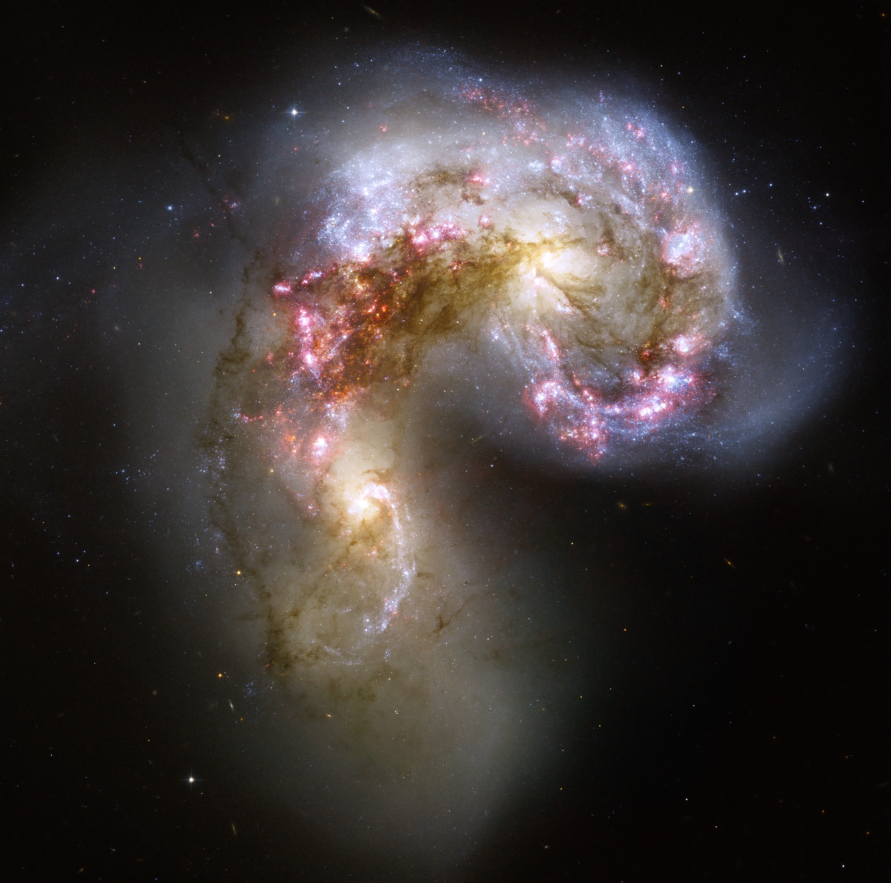

spiral galaxy
ASTR 101 · Lecture 12
Galaxies: Types, Interactions, and Evolution
Evidence, model, and quantitative reasoning
Learning Goals
- Explain why this lecture's central phenomenon matters: galaxies are not isolated static islands.
- Use the key model idea that morphology is a useful description but not a complete evolutionary sequence.
- Apply the lecture's quantitative tool with units, assumptions, and a physical interpretation.
- Correct the misconception: The Hubble tuning fork is a classification diagram, not a simple evolutionary path from one type to another.
Reading anchor: OpenStax Astronomy 2e, Chapters 26.1-26.5 and 27.1-27.4 on galaxy types, distances, active galaxies, and galaxy evolution.
Why This Question Matters
The Curtis-Shapley debate and Hubble's distance measurements moved galaxies from 'spiral nebulae' to island universes. Morphology became a clue, not the whole story.
Opening Phenomenon
Galaxies are not isolated static islands. Their shapes, colors, star formation, and activity carry evidence of environment and history.
First question: what is directly observed, and what part is an explanation built from a model?
Vocabulary for Reasoning
elliptical galaxy
irregular galaxy
redshift
starburst
active galactic nucleus
merger
Use these terms to describe evidence and relationships, not as isolated vocabulary.
Evidence We Need to Explain
- Galaxy colors and spectra trace stellar populations and star formation.
- Tidal tails, bridges, and disturbed shapes reveal interactions.
- Redshift connects spectra to motion and, in cosmology, distance scale.
Physical or Geometric Model
- Morphology is a useful description but not a complete evolutionary sequence.
- Interactions redistribute gas and stars and can trigger star formation.
- Supermassive black hole accretion can produce active galactic nuclei.
Quantitative Tool
\[ z = \frac{\lambda_{\mathrm{obs}} - \lambda_0}{\lambda_0} \]
At low redshift, redshift can approximate recession speed; at larger redshift, cosmology matters.
Worked Example
- A spectral line with rest wavelength 500.7 nm observed at 550.8 nm has z about 0.10.
- At low redshift, this corresponds approximately to recession speed 0.10c.
- For larger redshift, cosmological interpretation requires a more careful model.
The answer should explain when the low-redshift approximation is adequate and when it is not.
Visual Reasoning
Use morphology, color, spectra, and environment as evidence for galaxy history, not as labels alone.
- Which features indicate interaction?
- What evidence traces recent star formation?
- Why is morphology not a full evolutionary history?

Common Misconception
The Hubble tuning fork is a classification diagram, not a simple evolutionary path from one type to another.
Correct it by treating morphology as classification, not a required evolutionary sequence.
Active Learning Segment
Students classify galaxy images, justify criteria, and identify at least one ambiguous or interaction-disturbed case.
Write a prediction first, compare reasoning with a neighbor, then revise your answer in one sentence.
Lab or Observing Connection
Lab 08 applies documented morphology criteria and simple redshift interpretation. Your classifications should cite morphology criteria and note ambiguous or interacting systems.
Synthesis
Galaxies connect local astrophysics to cosmic history: stars, gas, black holes, dark matter, and environment all matter.
- What can morphology tell us?
- What can spectra and color add?
- What evidence reveals interaction or activity?
References and Visual Credits
- OpenStax, Astronomy 2e: OpenStax Astronomy 2e, Chapters 26.1-26.5 and 27.1-27.4 on galaxy types, distances, active galaxies, and galaxy evolution.
- Local reference copy:
references/openstax-astronomy-2e.pdf. - Visual: Tidal distortion and compact blue star clusters show that galaxy morphology can record interaction history. Credit: NASA, ESA, and the Hubble Heritage Team (STScI/AURA)-ESA/Hubble Collaboration; acknowledgement B. Whitmore and James Long; CC BY 4.0.